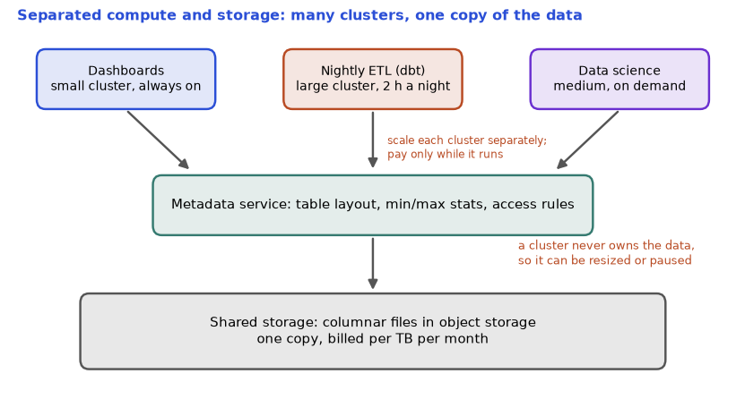

You have a clean fct_orders from Chapter 7. Where does it live, and who pays when 50 analysts query it at 10 a.m. on Monday? A cloud data warehouse is a database service built for analytics (OLAP, Chapter 1) that runs on rented machines. It scales up when you need it and costs money by the second or by the byte. The same SQL can cost Rs 10 or Rs 10,000 depending on how the table is laid out. In this chapter you will learn what all the big warehouses have in common, what is different, how partitioning and clustering reduce scanning (with a runnable simulation), how to control cost, and how the three big clouds map to each other. Finally, we look at the non-SQL databases (key-value, document, wide-column) that sit beside a warehouse in real systems.
Honest note: none of the cloud products can be run in this sandbox. Product features and names change often, so we teach the concepts and mark any product detail as "check current docs". We deliberately avoid prices. The simulations are our own teaching toys in Python.
Running example: ShopKart's fct_orders has 3,650,000 rows (365 days, 10,000 orders per day, 100 bytes per row), so about 365 MB. Small for a real warehouse, but the arithmetic scales: multiply by 10,000 to get a realistic 3.65 TB.
| Word | Plain meaning | Example |
|---|---|---|
| Separation of storage and compute | Data lives in cheap shared storage; compute clusters are started and stopped independently | Finance and Marketing queries do not slow each other |
| Massively parallel processing (MPP) | Split a query over many machines that each handle a slice of the data | A 1 TB scan split over 100 workers |
| Virtual warehouse (Snowflake) | A named cluster of compute that runs queries; you choose a size and can pause it | BI_WH size Medium |
| Slot (BigQuery) | A unit of compute (CPU and memory) that BigQuery gives a query | A query using 2,000 slots |
| Micro-partition | A small immutable file block (tens of MB) with min and max values per column kept in metadata | Lets the engine skip blocks |
| Elasticity | Resize or add compute within seconds or minutes | Scale up for month-end |
| Pruning | Skipping blocks that cannot contain the answer | Read 1 day, not 365 |
users, BI tools, dbt
|
+-------+--------+ compute (rent by time or by work)
| warehouse A | warehouse B | <- each can be started, resized, paused
+-------+--------+
|
metadata service (table layout, min/max stats, access rules)
|
+------------------------+
| shared storage | data (cheap; columnar files in object storage)
| (columnar, compressed) |
+------------------------+How to read it: a query goes to a compute cluster; the cluster asks the metadata service which blocks it needs; it reads only those blocks from shared storage and works on them in parallel. Storage is billed per TB per month, compute per second or per scan.
| Product | Compute model | Layout tools | Notable ideas (verify current docs) |
|---|---|---|---|
| Snowflake | Virtual warehouses sized XS, S, M, L and so on; each size up roughly doubles the credits per hour; auto-suspend when idle | Automatic micro-partitions; optional clustering keys | Time travel (query an old state of a table for a retention period), zero-copy clone, streams and tasks (change capture and scheduling inside the warehouse), Snowpark (Python code that runs in the warehouse) |
| BigQuery | Serverless: you do not manage clusters. On-demand pricing by bytes scanned, or reserved capacity in slots | Partitioning (by date, ingestion time, integer range) and clustering (up to a few columns) | Nested and repeated fields (STRUCT and ARRAY) store one-to-many data in one row; a dry run tells you the bytes a query would scan before you run it |
| Redshift | Cluster of nodes (a leader and compute nodes), or Serverless | Distribution style (how rows are spread over nodes: KEY, ALL, EVEN, AUTO) and sort keys (physical row order) | Spectrum queries files in object storage; managed storage separates storage from compute on newer node types |
| Azure Synapse / Microsoft Fabric | Synapse dedicated pools (fixed capacity, 60 distributions) and serverless SQL over lake files; Fabric unifies lakehouse, warehouse and BI over one lake called OneLake | Hash, round-robin or replicated distribution in dedicated pools | Fabric is the newer direction; Synapse naming and products are evolving, so check docs |
| Databricks SQL | SQL warehouses (clusters tuned for SQL) over Delta Lake tables in your own storage | Delta partitioning, file compaction and clustering features | Lakehouse: one copy of data in open formats (Chapter 3.4), used by SQL and Spark |
Problem 8.1.1 A Snowflake-style Medium warehouse uses 4 credits per hour (XS = 1, S = 2, M = 4, L = 8; this doubling rule is the common pattern, check your account). A dashboard team leaves it running 24 hours a day on 30 days. With auto-suspend, it would actually run only 6 hours per day. How many credits are saved per month?
| Formula | credits = credits per hour × hours |
|---|---|
| Plug in | always on: 4 × 24 × 30; with auto-suspend: 4 × 6 × 30 |
| Compute | always on: 4 × 24 = 96 per day, × 30 = 2,880. Auto-suspend: 4 × 6 = 24 per day, × 30 = 720. Saved: 2,880 − 720 = 2,160 |
| Answer | 2,160 credits a month, which is 75% of the bill. |
| Check | 6 hours out of 24 is one quarter, so 25% remains, and 2,160 / 2,880 = 0.75. |
| Why it matters | The cheapest optimization in time-billed warehouses is not a clever query. It is "do not pay for an idle machine". (Real billing has a small minimum per resume, so extremely frequent resume cycles cost a little extra.) |
You will choose and justify one warehouse in a design interview, and you will be asked "how would you control its cost?". Your answer starts with the compute-versus-scan distinction above.
Check yourself
customer_id with 50,000 values; you create tiny pieces (the small-file problem again).We use the running example. Before running, predict: how many MB are scanned for WHERE day = 100 with no partitioning, and with day partitioning? And inside one day, if rows are in random order versus sorted by country, how many of the 10 blocks contain 'DE'?
import random
random.seed(7)
days=365; rows_per_day=10000; bytes_per_row=100
countries=["IN","US","UK","DE","SG"]
data=[(d,random.choice(countries)) for d in range(days) for _ in range(rows_per_day)]
total=len(data)*bytes_per_row
print(f"table: {len(data):,} rows, {total/1e6:.0f} MB")
print("no partition, WHERE day=100 :", f"{total/1e6:.0f} MB scanned")
print("partition by day, day=100 :", f"{rows_per_day*bytes_per_row/1e6:.0f} MB scanned")
print("partition by day, 30 days :", f"{30*rows_per_day*bytes_per_row/1e6:.0f} MB scanned")
day=[c for d,c in data if d==100]
def blocks_read(rows,target,bs=1000):
return sum(1 for i in range(0,len(rows),bs) if target in rows[i:i+bs])
print("unsorted day: blocks containing 'DE':",blocks_read(day,"DE"),"of",len(day)//1000)
print("sorted day: blocks containing 'DE':",blocks_read(sorted(day),"DE"),"of",len(day)//1000)
rate=5.0 # illustrative price per TB scanned, NOT a real price
for lab,mb in (("full scan",total/1e6),("1 day",rows_per_day*bytes_per_row/1e6)):
print(f"{lab}: {mb:.0f} MB -> cost at {rate}/TB = {mb/1e6*rate:.6f} units; x1000 queries/day = {mb/1e6*rate*1000:.2f}")Real output:
table: 3,650,000 rows, 365 MB
no partition, WHERE day=100 : 365 MB scanned
partition by day, day=100 : 1 MB scanned
partition by day, 30 days : 30 MB scanned
unsorted day: blocks containing 'DE': 10 of 10
sorted day: blocks containing 'DE': 3 of 10
full scan: 365 MB -> cost at 5.0/TB = 0.001825 units; x1000 queries/day = 1.82
1 day: 1 MB -> cost at 5.0/TB = 0.000005 units; x1000 queries/day = 0.00Explanation:
Problem 8.2.1 A 3.65 TB table is partitioned by day (365 partitions, equal size). A dashboard query filters day BETWEEN '2024-06-01' AND '2024-06-30'. How much is scanned, and what percent of the table?
| Formula | scanned = partitions matched × size per partition |
|---|---|
| Plug in | size per partition = 3.65 TB / 365 = 0.01 TB; matched = 30 days |
| Compute | 30 × 0.01 = 0.30 TB; percent = 0.30 / 3.65 × 100 = 8.2% |
| Answer | 0.3 TB, which is 8.2% of the table. |
| Check | 30 / 365 = 0.0822, matching 8.2%. |
| Why it matters | A monthly report scans one twelfth of the table instead of all of it. |
Problem 8.2.2 The same query is written WHERE DATE(event_ts) = '2024-06-01' on a table partitioned by event_ts (a timestamp). Does pruning still work?
| Step 1 | Pruning compares the partition's min and max of the stored column with your filter. |
|---|---|
| Step 2 | A function wrapped around the column (DATE(event_ts)) can hide that link on some engines. Some engines recognise common patterns (like casting a timestamp to a date), others do not. |
| Answer | It may or may not prune depending on the engine. The safe style is a range on the raw column: event_ts >= '2024-06-01' AND event_ts < '2024-06-02'. |
| Check | Look at the query plan or a dry run: the bytes estimate tells you whether pruning happened. |
| Why it matters | A silent full scan is the number one cause of a surprise bill. |
SELECT *.LIMIT does not cut cost on scan-billed engines.EXPLAIN before large queries.This is the FinOps habit from Chapter 1: tag every workload with an owner, track cost per pipeline, and review the top 10 most expensive queries every week.
Problem 8.2.3 A report scans a 2 TB table 20 times a day. A dbt model builds a 40 GB daily summary table once a day by scanning the 2 TB once. The report then reads the summary (40 GB) instead. Compare daily bytes scanned.
| Step 1 | Before: 20 × 2 TB = 40 TB. |
|---|---|
| Step 2 | After: 1 × 2 TB (the build) + 20 × 0.04 TB = 2 + 0.8 = 2.8 TB. |
| Answer | 40 TB falls to 2.8 TB, a 14.3 times reduction. |
| Check | 40 / 2.8 = 14.29. The 40 GB = 0.04 TB conversion uses 1 TB = 1,000 GB. |
| Why it matters | "Aggregate once, query many times" is the standard cost win of the ELT pattern. |
Cost reviews are a normal part of the data-engineer job. "Why did the bill double?" is answered by a list of queries by bytes, a missing partition filter, or a warehouse left running.
Check yourself
WHERE day = '2024-06-01' or WHERE strftime('%d', day) = '01'? Answer: the plain comparison on the raw column.customer_id a bad idea? Answer: very high cardinality gives millions of tiny parts.| Capability | AWS | Azure | GCP |
|---|---|---|---|
| Object storage (data lake) | S3 | Azure Data Lake Storage Gen2 (Blob) | Cloud Storage |
| Warehouse | Redshift | Synapse / Fabric Warehouse | BigQuery |
| Serverless query on lake files | Athena | Synapse serverless SQL | BigQuery external tables |
| Managed Spark | EMR, Glue | Synapse Spark, Databricks, Fabric | Dataproc, Databricks |
| Managed ETL / orchestration | Glue, Step Functions, MWAA (managed Airflow) | Data Factory | Cloud Composer (managed Airflow), Dataflow |
| Streaming ingest | Kinesis, MSK (managed Kafka) | Event Hubs | Pub/Sub |
| Stream processing | Kinesis Data Analytics / Managed Flink | Stream Analytics | Dataflow (Apache Beam) |
| Catalog and governance | Glue Data Catalog, Lake Formation | Purview | Dataplex |
| Monitoring | CloudWatch | Azure Monitor | Cloud Monitoring |
| Infrastructure as code | CloudFormation, Terraform | Bicep, Terraform | Deployment Manager, Terraform |
| Secrets and keys | Secrets Manager, KMS | Key Vault | Secret Manager, Cloud KMS |
Service names change over time, so treat this as a map to confirm in current documentation. The skill-map certifications correspond: AWS Data Engineer Associate, an Azure data engineer exam (Fabric-based or current equivalent), Google Professional Data Engineer, Databricks Data Engineer, and SnowPro Core.
A warehouse is not the only data store. Production systems use several, each for what it does best. This is polyglot persistence.
| Type | Examples | Data shape | Strong at | Weak at |
|---|---|---|---|---|
| Key-value | Redis, DynamoDB | key to value | Millisecond lookups, caches, sessions, counters | Ad-hoc queries across values |
| Document | MongoDB, Cosmos DB | JSON-like documents | Flexible schema, one object per read | Many-table joins |
| Wide-column | Cassandra, DynamoDB, HBase | rows by partition key, columns vary | Huge write volumes, time-ordered data | Queries not designed in advance |
| Time-series | InfluxDB, TimescaleDB | timestamp plus values | Metrics, IoT, downsampling | General relational work |
| Graph | Neo4j | nodes and edges | Relationship queries, fraud rings | Large aggregates |
| Search | Elasticsearch, OpenSearch | inverted index of text | Full-text search, log search | Strict transactions |
| NewSQL / distributed SQL | CockroachDB, Spanner | SQL with global scale | Transactions at scale | Cost and complexity |
Three ideas matter for data engineers, and we can test each.
A runnable check (our own toy, plain Python, run here). Predict: a user "u1" is read 6 times at seconds 0, 10, 20, 61, 62, 130 with a TTL of 60. How many database calls?
6 reads, DB calls = 3 (misses at t=0, t=61, t=130)
100 requests over 5s at 20 rps: allowed=34 denied=66
partition key = date : {1: 1000}
partition key = user : {0: 249, 1: 251, 2: 249, 3: 251}Reading each line:
Problem 8.3.2 An IoT table in a wide-column store uses device_type as the partition key. There are 3 device types and 10,000 devices; one type ("thermostat") produces 70% of the writes. A cluster has 12 partitions' worth of capacity. What goes wrong, and what is a better key?
| Step 1 | With 3 key values, at most 3 partitions can ever receive writes; 9 of 12 sit idle. |
|---|---|
| Step 2 | The thermostat partition receives 70% of the traffic, so it is the bottleneck. |
| Step 3 | A better key is device_id (high cardinality), possibly combined with a day bucket: (device_id, date), so one device's data does not grow forever in one partition. |
| Answer | Low-cardinality, skewed key causes hot partitions and idle capacity; use device_id plus a time bucket. |
| Check | With 10,000 device ids hashed over 12 partitions, each gets about 833 devices (10,000 / 12), so about 8.3% of the load each (assuming similar write rates per device). |
| Why it matters | Access patterns, not tables, drive NoSQL design: decide the queries first, then the key. |
In a system design interview you will draw a warehouse and say what else sits around it: Redis for serving features with low latency, a document store for raw JSON, a search index for logs. Naming the right store with one strength and one weakness is what shows judgement.
Check yourself
date a bad partition key for a write-heavy key-value table? Answer: all writes for today land on one partition, creating a hot spot.The sections above gave you the vocabulary. This one gives you the habit that separates a junior from an expert: before you run a query, estimate what it will cost, and after you run it, check that the estimate was right. Every warehouse bills for one of two things. Scan-based engines (BigQuery on-demand, Athena) charge for bytes read. Time-based engines (Snowflake, Redshift provisioned) charge for how long a cluster is awake. The tuning levers differ, but the question is the same: how do I make the engine touch less data, or stay awake for less time?

How to read it: start at the bottom. The data lives once, in cheap object storage. Above it, a metadata service knows where every file is and what range of values each file holds. The three boxes at the top are independent clusters. You can resize or pause one without touching the others, which is why Snowflake and BigQuery can give the nightly ETL a big cluster for two hours and the dashboards a small one all day.
A fact table has 2 TiB of data, 365 daily partitions and 40 columns. The three columns a dashboard needs hold about 5% of the bytes. Predict first: how much cheaper is "3 columns, 7 days" than SELECT * over everything?
# BigQuery-style on-demand cost: you pay for bytes scanned, so layout and columns matter.
TB = 1024**4
table_bytes = 2 * TB # 2 TiB fact table, 365 daily partitions, 40 columns
price_per_tib = 6.25 # illustrative USD per TiB scanned, check current pricing
col_share = {"order_id": 0.02, "order_date": 0.01, "amount": 0.02} # share of table bytes per column
def cost(b): return b / TB * price_per_tib
scan_all = table_bytes
scan_cols = table_bytes * sum(col_share.values())
days = 7
scan_cols_part = scan_cols * days / 365
for name, b in [("SELECT * , no filter", scan_all),
("3 columns, no filter", scan_cols),
("3 columns, 7 of 365 partitions", scan_cols_part)]:
print(f"{name:34s} {b/1024**3:9.2f} GiB ${cost(b):8.4f}")
print("saving, first vs last:", round(scan_all / scan_cols_part), "x")
print("30 dashboard refreshes a day for a month, last query: $", round(cost(scan_cols_part) * 30 * 30, 2))
print("same refreshes with SELECT *: $", round(cost(scan_all) * 30 * 30, 2))SELECT * , no filter 2048.00 GiB $ 12.5000
3 columns, no filter 102.40 GiB $ 0.6250
3 columns, 7 of 365 partitions 1.96 GiB $ 0.0120
saving, first vs last: 1043 x
30 dashboard refreshes a day for a month, last query: $ 10.79
same refreshes with SELECT *: $ 11250.0| Step 1 | SELECT * reads every column of every partition: 2,048 GiB, which is 2 TiB, so 2 x 6.25 = $12.50. |
|---|---|
| Step 2 | Columnar storage (Chapter 3) lets the engine read only the 3 needed columns: 5% of 2,048 GiB = 102.4 GiB, or $0.625. |
| Step 3 | Partition pruning on the date column keeps 7 of 365 partitions: 102.4 x 7 / 365 = 1.96 GiB, or $0.012. |
| Step 4 | Ratio: 2,048 / 1.96 is about 1,043 times less data. |
| Check | The dashboard refreshing 30 times a day for 30 days: 900 runs x $0.012 = $10.79 a month. With SELECT * the same refreshes cost 900 x $12.50 = $11,250. |
LIMIT 10 makes a scan-based query cheap. On BigQuery, SELECT * FROM big LIMIT 10 still reads every column of the table and bills for it. Wrong: "I only asked for 10 rows, so it costs nothing." Right: name only the columns you need, filter on the partition column, and use the dry-run estimate (the console shows "this query will process X GB") before you press run.Snowflake sizes double the credits per hour at each step (XS 1, S 2, M 4, L 8, XL 16). Bigger does not always mean cheaper, and it does not always mean faster by the same factor. Predict: a 40-minute ETL on size M is moved to L. If it ran in exactly half the time the cost would be identical. What do you expect in practice?
# Snowflake-style credit arithmetic. Warehouse size doubles credits per hour at each step.
credits_per_hour = {"XS": 1, "S": 2, "M": 4, "L": 8, "XL": 16}
price_per_credit = 3.0 # illustrative USD
def run_cost(size, minutes, billed_min=1.0):
return credits_per_hour[size] * max(minutes, billed_min) / 60 * price_per_credit
# an ETL job: 40 min on M. On L it often finishes in a bit over half the time, not exactly half.
for size, minutes in [("M", 40), ("L", 22), ("XL", 13), ("XL", 20)]:
print(f"{size:3s} {minutes:3d} min credits={credits_per_hour[size]*minutes/60:5.2f} cost=${run_cost(size, minutes):5.2f}")
# idle cost: dashboards hit an M warehouse for 5 seconds every 10 minutes.
def day_cost(auto_suspend_s):
runs = 24 * 6 # one query every 10 min
# each query keeps the warehouse awake for 5 s of work + the auto-suspend wait,
# capped at the 600 s gap between queries; every resume bills at least 60 s
awake = min(5 + auto_suspend_s, 600)
awake = max(awake, 60)
return runs * awake / 3600 * credits_per_hour["M"] * price_per_credit
for s in (600, 300, 60):
print(f"auto-suspend {s:3d}s -> ${day_cost(s):6.2f} per day")M 40 min credits= 2.67 cost=$ 8.00
L 22 min credits= 2.93 cost=$ 8.80
XL 13 min credits= 3.47 cost=$10.40
XL 20 min credits= 5.33 cost=$16.00
auto-suspend 600s -> $288.00 per day
auto-suspend 300s -> $146.40 per day
auto-suspend 60s -> $ 31.20 per day| Formula | cost = credits per hour x minutes / 60 x price per credit |
|---|---|
| M, 40 min | 4 x 40 / 60 = 2.67 credits = $8.00. |
| L, 22 min | 8 x 22 / 60 = 2.93 credits = $8.80. It finished in 55% of the time, not 50%, so it costs 10% more but returns 18 minutes sooner. |
| XL, 13 min | 3.47 credits, $10.40. Doubling again only cut the time from 22 to 13 minutes. Work that cannot be split further (one slow stage, a small table) stops scaling. |
| Idle tax | A dashboard queries an M warehouse for 5 seconds every 10 minutes. With auto-suspend at 600 s the warehouse never sleeps: 24 hours x 4 credits x $3 = $288 a day. At 60 s it sleeps most of the time and each wake bills a 60-second minimum: 144 wakes x 60 s = 2.4 hours, $31.20 a day. |
| Answer | Resizing buys speed at a small premium. Auto-suspend is usually the larger saving: 9 times cheaper for the same queries. |
Redshift stores each column in 1 MB blocks and keeps the minimum and maximum of every block (a zone map). A filter skips every block whose range cannot match. Snowflake micro-partitions and BigQuery clustering use the same idea. It only works if similar values sit together, and that is what a sort key (or a clustering key) does. The simulation uses 100,000 rows in 100 blocks of 1,000. Predict: how many blocks does a one-week filter read when the table is unsorted, and when sorted by date?
# Zone maps (Redshift sort keys, Snowflake micro-partitions, BigQuery clustering all use the idea):
# each block stores min and max of a column; a filter skips blocks whose range cannot match.
import random
random.seed(7)
N, BLOCK = 100_000, 1_000 # 100 blocks of 1,000 rows
dates = [random.randint(0, 364) for _ in range(N)]
def blocks_scanned(vals, lo, hi):
n = 0
for i in range(0, len(vals), BLOCK):
blk = vals[i:i+BLOCK]
if max(blk) >= lo and min(blk) <= hi: n += 1
return n
lo, hi = 100, 106 # a one week filter
unsorted_ = blocks_scanned(dates, lo, hi)
sorted_ = blocks_scanned(sorted(dates), lo, hi)
print("rows matching:", sum(lo <= d <= hi for d in dates))
print("blocks scanned, unsorted:", unsorted_, "of", N // BLOCK)
print("blocks scanned, sorted by date:", sorted_, "of", N // BLOCK)
# second filter column: customer id, sorted by date only. Does it help? no.
cust = [random.randint(1, 5000) for _ in range(N)]
order = sorted(range(N), key=lambda i: dates[i])
cust_by_date = [cust[i] for i in order]
print("customer filter after sorting by date:", blocks_scanned(cust_by_date, 42, 42), "of 100 blocks")rows matching: 1936
blocks scanned, unsorted: 100 of 100
blocks scanned, sorted by date: 3 of 100
customer filter after sorting by date: 100 of 100 blocksCURRENT_TIMESTAMP() or other non-deterministic functions usually bypasses it, so check.user_id on a scan-based engine. Wrong: 5 million user partitions, each a few KB, so metadata is huge and queries are slower. Right: partition by a low-cardinality, always-filtered column (date), then cluster by user_id inside it.Problem 8.4.1 A query scans 600 GiB and runs on BigQuery on-demand at $6.25 per TiB. A colleague adds a date filter that keeps 30 of 365 partitions. What does the query cost before and after?
| Before | 600 / 1,024 = 0.586 TiB, times 6.25 = $3.66. |
|---|---|
| After | 600 x 30 / 365 = 49.3 GiB = 0.0482 TiB, times 6.25 = $0.30. |
| Answer | $3.66 to $0.30, a saving of 92%. |
| Check | 30 / 365 = 8.2% of the data, so the cost should be 8.2% of $3.66, which is $0.30. |
Problem 8.4.2 An hourly job runs 3 minutes on a Small warehouse (2 credits per hour) at $3 per credit. Auto-suspend is 10 minutes. The job runs every hour. What does it cost per day, and what if auto-suspend is 1 minute? (Ignore the 60-second minimum, it is already exceeded.)
| 10-min suspend | Awake 3 + 10 = 13 minutes per hour. 13 x 24 = 312 minutes = 5.2 hours. 5.2 x 2 x $3 = $31.20. |
|---|---|
| 1-min suspend | Awake 3 + 1 = 4 minutes per hour. 4 x 24 = 96 minutes = 1.6 hours. 1.6 x 2 x $3 = $9.60. |
| Answer | $31.20 versus $9.60 a day. The suspend setting cut the cost by 69% without changing the job. |
Problem 8.4.3 A table is clustered by order_date. A query filters WHERE customer_id = 42. Will clustering help? What do you change?
| Step 1 | The zone maps hold min and max of order_date. The filter is on a different column, so almost every block's customer range spans 42. |
|---|---|
| Step 2 | Our simulation showed it: 100 of 100 blocks scanned. |
| Answer | It will not help. Either cluster by (order_date, customer_id) if both filters are common, or keep the table as is and build a lookup table or search optimisation feature for the customer query. |
Practice (with answers)
Not run here: the real dry-run and cost views (INFORMATION_SCHEMA.JOBS in BigQuery, WAREHOUSE_METERING_HISTORY in Snowflake, SVL_QUERY_SUMMARY in Redshift) need an account. Look them up in the vendor documentation for your version. The arithmetic above uses only Python and was run here.
EXPLAIN before large queries; avoid SELECT *.| Pattern | Rule or formula |
|---|---|
| Credits | credits per hour × hours |
| Pruning | scanned = matched partitions × size per partition |
| Scan cost | TB scanned × price per TB |
| Aggregate once | build scan + (reads × summary size) versus reads × full size |
| Cache hit rate | hits / reads |
| Token bucket | allowed ≈ burst + rate × time |
1. (easy) Name two things you can do to reduce the cost of a time-billed warehouse. Answer: auto-suspend when idle and right-size the cluster (also stop duplicate dashboards from re-running heavy queries).
2. (easy) Does LIMIT 10 reduce the bytes scanned on a scan-billed engine? Answer: usually no; the engine still reads the needed columns and partitions. Prune with a partition filter instead.
3. A 1.2 TB table is partitioned by day over 400 equal days. A query reads 7 days. Bytes scanned? Answer: 1.2 TB / 400 = 0.003 TB per day; 7 × 0.003 = 0.021 TB = 21 GB.
4. A Large warehouse (8 credits per hour) runs 3 hours a day for 20 days. Credits? Answer: 8 × 3 × 20 = 480.
5. (what is the output?) Cache TTL 30, reads at t = 0, 29, 30, 31. How many database calls? Answer: 2. The value stored at t=0 expires at 30, so reads at 0 miss, 29 hits, 30 misses (expired), 31 hits (stored at 30, expires at 60).
6. (find the bug) A table is partitioned by order_date. A dashboard query is WHERE EXTRACT(MONTH FROM order_date) = 6. Answer: a function on the partition column can block pruning (and it mixes all years); use order_date >= '2024-06-01' AND order_date < '2024-07-01'.
7. A table partitioned by customer_id (200,000 customers) holds 50 GB. Average size per partition and the problem? Answer: 50 GB / 200,000 = 0.00025 GB = 250 KB per partition: tiny parts, heavy metadata and slow scans. Partition by date and cluster by customer id.
8. (interview) "BigQuery or Snowflake for a new company?" Answer: it depends: on GCP with spiky, unpredictable usage and a small team, BigQuery's serverless model is attractive; with multi-cloud needs, predictable workloads and fine control of compute isolation, Snowflake fits. Compare concurrency, cost model, ecosystem, security and team skills, and run a proof of concept on real queries.
9. (interview) "Your monthly warehouse bill doubled. How do you investigate?" Answer: list queries and warehouses by cost for the two months, find the new or grown workloads, check for missing partition filters, always-on or oversized compute, exploding joins and repeated identical queries; then fix the top offenders, add budgets and alerts, and tag workloads by owner.
10. (scenario) A rate-limited partner API allows 10 requests per second with bursts of 20. Your loader sends 50 requests per second. About how many succeed in the first 4 seconds under a token bucket? Answer: about 20 (burst) + 10 × 4 = 60 requests; the rest are denied or must wait and retry with backoff (Chapter 4.2).
You are my patient, practical professor. I am a working professional moving into data roles, and English is my second language. Teach me how cloud data warehouses work: separation of storage and compute, MPP, virtual warehouses versus slots, and time-billed versus scan-billed pricing. Use a restaurant analogy and small numbers. Then ask me 4 questions one at a time and check my answers.
You are my patient, practical professor. I am a working professional moving into data roles, and I am learning data engineering. Topic: partitioning, clustering, sort keys and distribution keys, and scan pruning in warehouses. Give 8 graded exercises with real numbers (bytes scanned, partitions matched, cardinality choices) and no solutions. I will paste my answers: [PASTE HERE] and you will correct them step by step.
You are my patient, practical professor. I am a working professional moving into data roles. Explain warehouse cost control (FinOps): auto-suspend, right-sizing, dry runs, result caching, materializing aggregates, budgets and alerts. Walk me through investigating a bill that doubled, with a made-up list of queries and costs. Then quiz me with 5 scenarios.
You are my patient, practical professor. I am a working professional moving into data roles, and I am applying for data engineer roles. Give me a mapping drill: 12 data capabilities (object storage, warehouse, managed Spark, streaming ingest, orchestration, catalog, secrets, monitoring and others). Ask me one at a time for the AWS, Azure and GCP service names, then correct me and explain the concept behind each.
You are my patient, practical professor. I am a working professional moving into data roles, and I am applying for data engineering interviews. Run a mock interview on warehouses and storage choices: Snowflake versus BigQuery versus Redshift, partition and cluster design, cost control, Redis, MongoDB, Cassandra and DynamoDB partition keys. Ask 8 questions one at a time, score each answer 1 to 5, give a model answer in simple English and one follow-up.